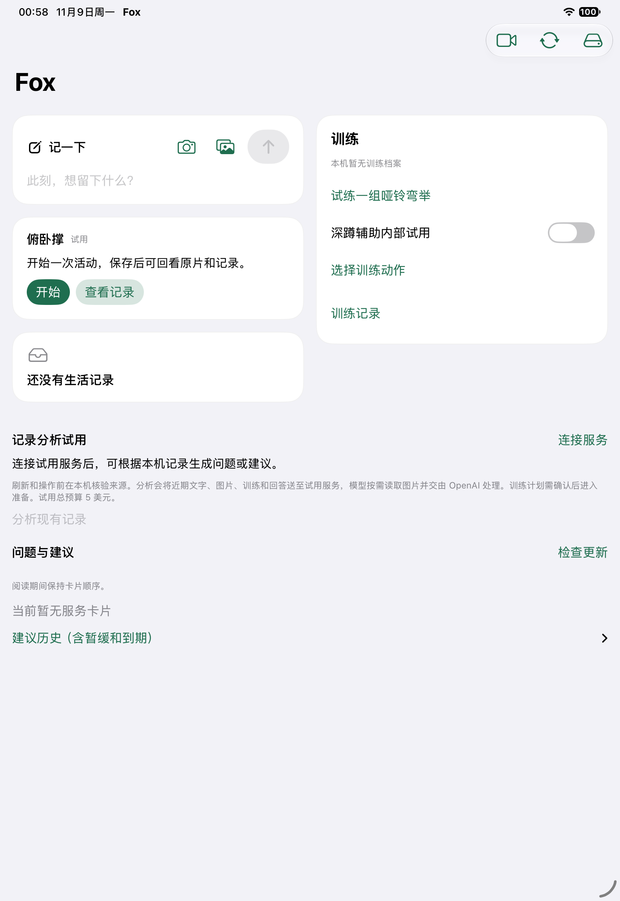
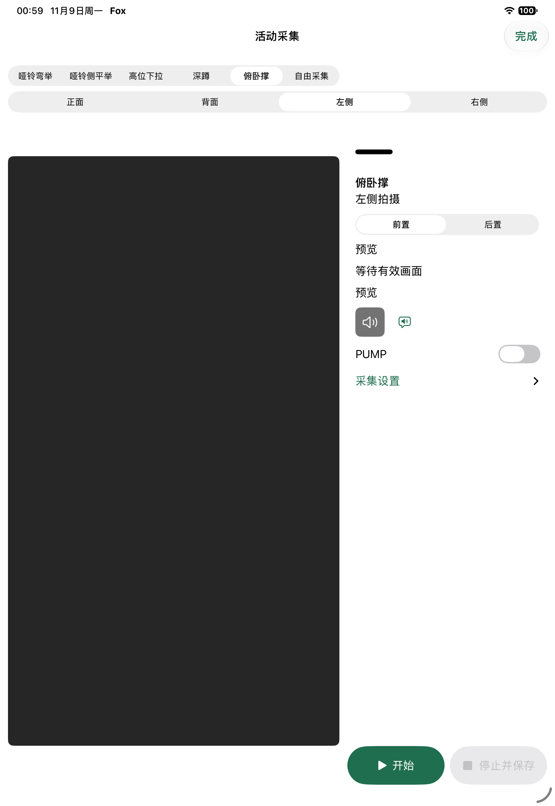

Native iPad workflow / Development snapshot
An activity, from start to review.
Capture what happened. Keep the recording. Add your account of the set without rewriting what the camera observed.
Real SwiftUI screens with synthetic input. November 9, 2026, before build48. English captions explain the Chinese interface.
01 / EntryOne place to begin.
The push-up card offers Start and View records. Text and photo capture share the home screen, while an activity has its own focused path.
This is an experimental activity, not a claim that push-up counting is reliable.

Actual simulator screenshot. Empty synthetic record store.
02 / CaptureChoose a viewpoint. Save a segment.
The shared workspace keeps exercise, viewpoint and front/back camera controls together. Start, then stop and save.
The dark preview comes from a no-person fixture. No real workout or hardware command is demonstrated.

Real UI, synthetic input; no live camera subject.
03 / ResultA record, not just a number.
Open the retained video. Add an optional reference count or note. Automatic observation stays unknown and the actual count stays unconfirmed until there is evidence.
“Not yet analyzed” is a separate state. Opening this page does not automatically request paid analysis.
Saved-result screen before any simulated service response.
What this proves: an implemented navigation and result-presentation workflow, backed by a historical synthetic UI test. It does not prove camera accuracy, clinical benefit or production readiness. Public main is an older source baseline; these screens are a later development snapshot.